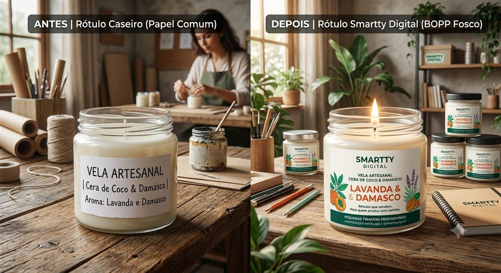
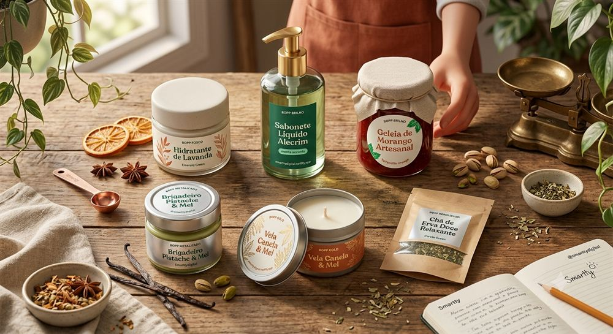

Existe uma ideia equivocada de que "rótulo artesanal" significa rótulo caseiro — feito na impressora de casa ou comprado pronto numa papelaria. Não é bem assim. Dá pra ter um produto 100% artesanal com uma etiqueta com qualidade de indústria grande. A diferença está na tecnologia de impressão, não em quem fez o produto.
O que empurrava pequenos produtores pro rótulo caseiro
Gráficas tradicionais trabalham com clichê e faca de corte — ferramentas físicas que só compensam financeiramente em tiragens de milhares de unidades. Pra quem produz pouco, isso sempre foi inviável. O resultado: muita gente acabava usando adesivo de papelaria ou imprimindo em casa, só porque não existia opção profissional acessível pra pequena escala.
O que muda com a impressão digital
A impressão digital a laser elimina clichê e faca de corte — o corte é feito digitalmente, com precisão, em qualquer formato, sem custo de ferramental. Isso significa que dá pra ter a mesma qualidade técnica que uma marca grande usa (impressão em branco sólido, cores vivas, material resistente a água e óleo com cola acrílica) sem precisar imprimir milhares de unidades.
O que o cliente percebe na mão
Rótulo caseiro tende a ter bordas irregulares, cores desbotadas e cola que solta com o tempo — sinais que, mesmo sem o cliente saber explicar tecnicamente, passam a mensagem de "produto amador". Uma etiqueta com qualidade industrial faz o oposto: transmite confiança antes mesmo da cliente ler o que está escrito.




A Smartty Digital tem mais de 20 anos de experiência em embalagens e impressão — conheça nossa história e por que decidimos focar exatamente nesse problema: dar acesso a rótulo de qualidade industrial pra quem produz pouco.
Quer ver a diferença no seu produto?
Fale com a Manu no WhatsApp e peça uma amostra do material — ela te mostra a diferença na prática, 24 horas por dia, todos os dias.
💬 Falar com a ManuE o melhor: continua no seu controle. A tiragem começa em 50 unidades por modelo — nada de comprometer o caixa com milhares de rótulos só pra ter qualidade profissional.
← Voltar pro blog